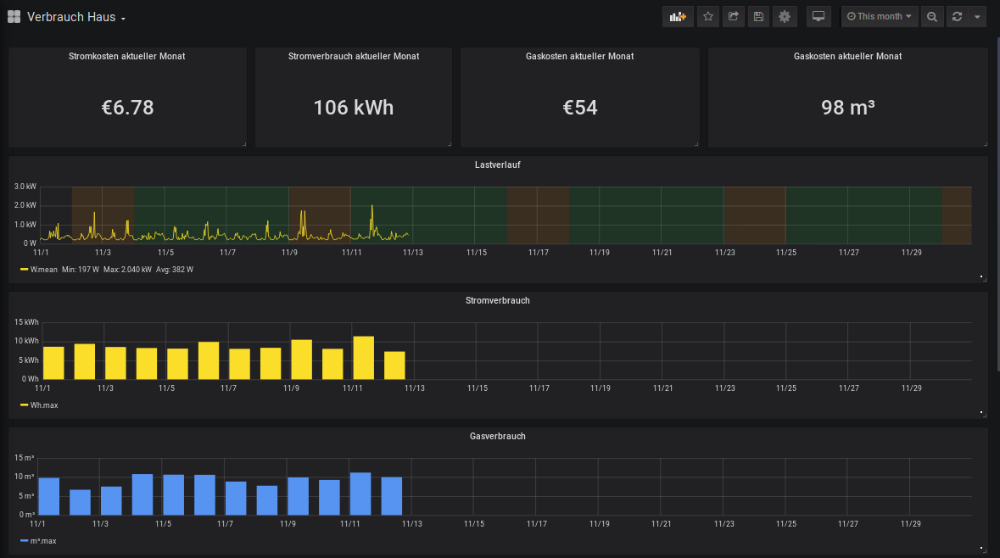

(digitalen) Stromzähler mit ESP8266 auslesen¶
Das Auslesen eines digitalen Stromzählers (EhZ) geschieht anhand der optischen S0-Schnittstelle bei der der Stromzähler den Verbrauch über die Impulsrate einer IR-LED anzeigt. Hier zeigen 10000 Impulse 1 kwH an. Über die Pulsrate kann der aktuelle Leistungsbedarf in Watt berechnet werden. Die S0-Schnittstelle ist hier mittels einer IR-Led ausgeführt die mittels eines Phototransistors oder wie in meinem Fall über ein TCRT-5000 (IR-Licht/Abstandssensor) ausgelesen werden kann.
Gut zu wissen: mit einer Handykamera (meist die Selfie-Kamera) kann man meist die IR-Signale "sehen" da dort kein IR-Filter eingebaut ist. Beim Hager EhZ sieht man allerdings nur die Signale der seriellen SML-Schnittstelle. Die Impulse der S0-IR-Led waren zu schwach um sie sichtbar in der Fotoansicht zu sehen.


Hardware¶
- ESP8266 NodeMCU
- Phototransistor oder TCRT-5000 (IR-Licht/Abstandssensor)
- Käbelchen
- USB-Netzteil
Software auf ESP8266¶
Auszug ESPhome YAML¶
1 2 3 4 5 6 7 8 9 10 11 12 13 14 15 16 17 18 19 20 | |
Home Assistant¶

Dort wird über die Integration "utility_meter" des Sensors "sensor.tagesverbrauch" (siehe ESPHome Sensor vom Typ "total_daily_energy") der Stromverbrauch in Wh über die Zeiträume
- täglich
- wöchentlich
- monatlich
- jährlich
aufgenommen und angezeigt. Diese Sensoren dienen auch als Datenbasis zur Darstellung des Verbrauchs in Grafana via InfluxDB.
Auszug Home Assistant Konfiguration¶
1 2 3 4 5 6 7 8 9 10 11 12 13 14 15 | |
Verbrauchswerte in Grafana¶
